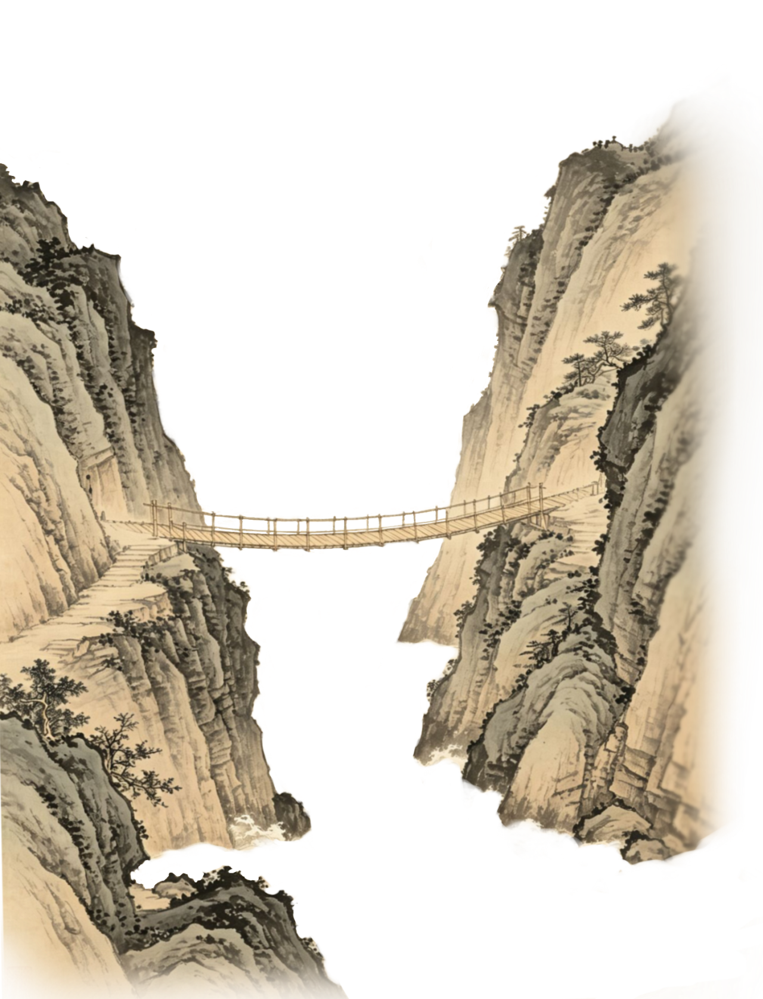
又称竹索桥,是在中国横断山新构造地带江流湍急河谷深切岩石壁立，而竹木众多的地理环境下，产生的一种特有的交通设施。以竹索和茅索为主要材料,用葛藤缠系,布板其上。取材方便、结构轻巧，适合跨越峡谷急流，是古代山区重要的交通设施。
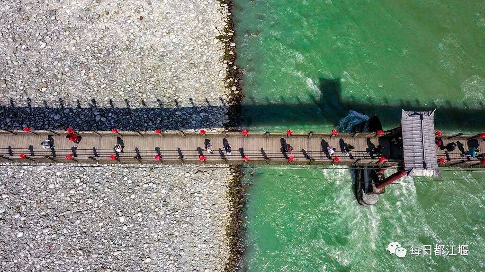
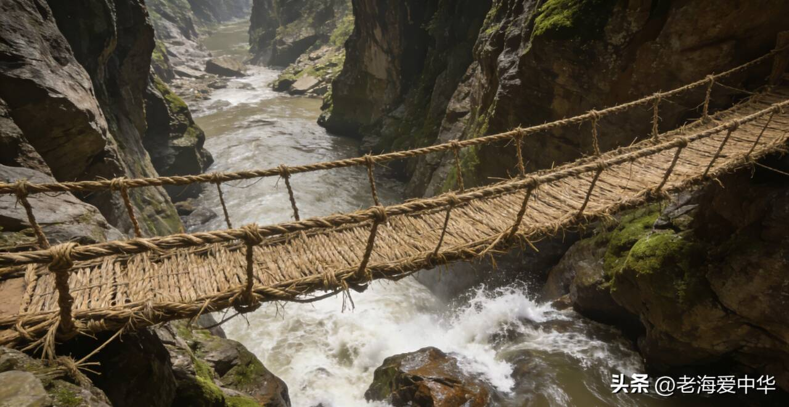
笮桥
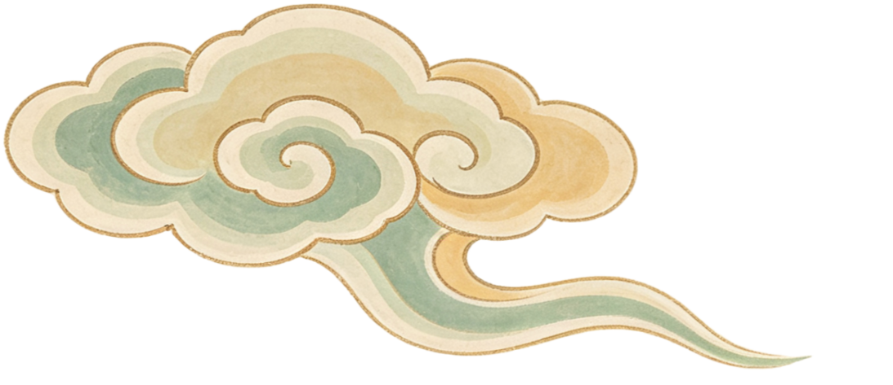
浮桥最大的威胁是水流的冲击力。
为了稳固桥身，古人在两岸和江底铸造了地锚，
主要分为岸上锚和水中锚两类。
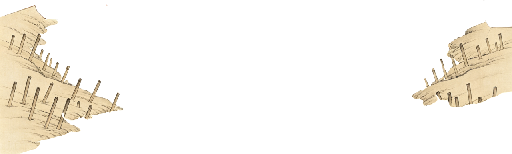
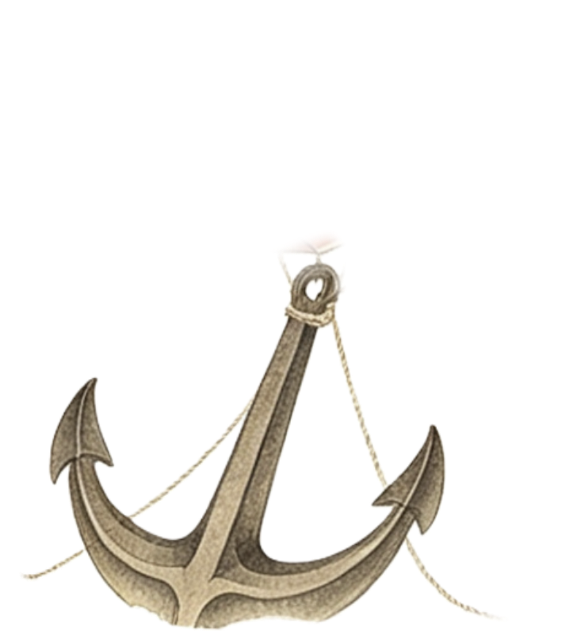
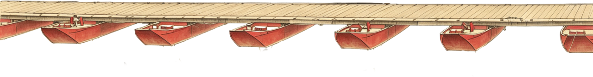
当水面较宽时，会在水下设置锚碇(如沉石、铁牛)，用绳索或钢索将浮桥的浮体与水下锚点相连，平衡水流对浮桥的冲击力，让浮桥保持稳定状态。唐代蒲津桥的每尊铁牛重达数十吨。
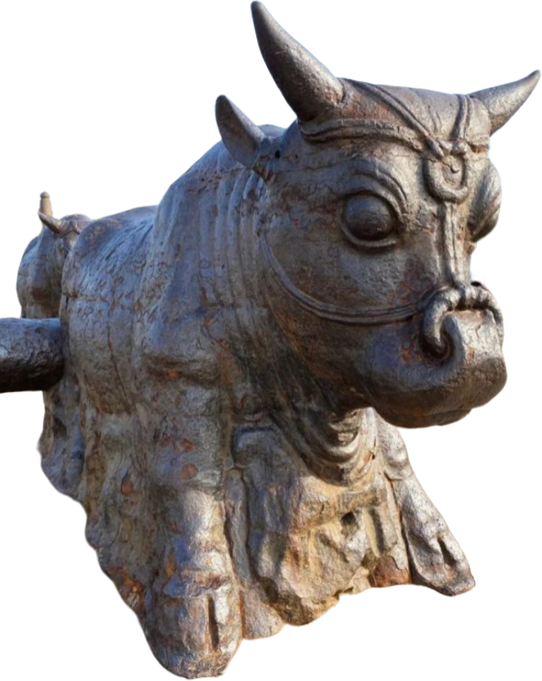
岸上锚通常用深埋的木桩，通过钢索或绳索将浮桥的端部与岸边锚点连接，以此限制浮桥的横向位移。
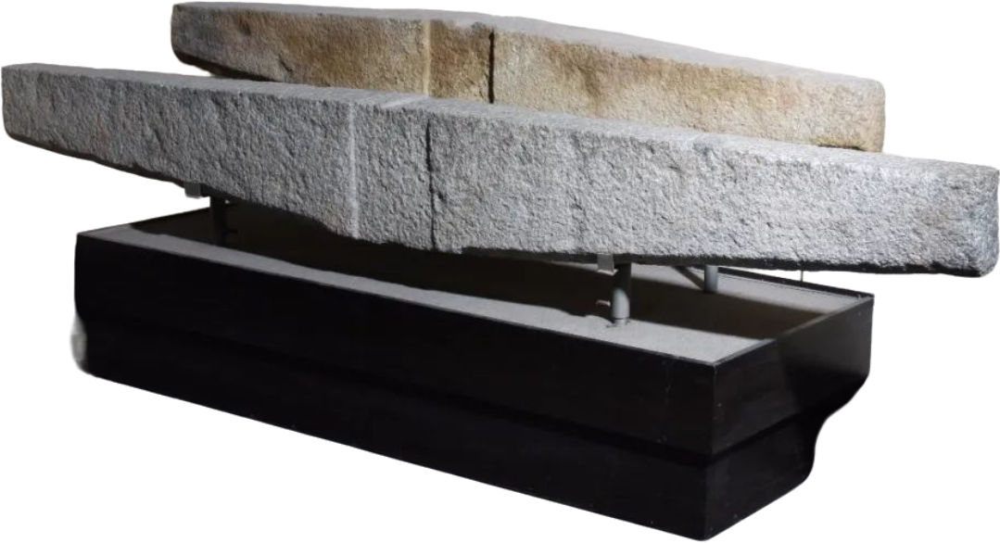
水流湍急的黄河、长江天险，固定桥梁难以存立。古人创制了浮桥，由多个小舟并束之以缆绳相连而成，这种结构使得浮桥能够利用水的浮力漂浮在江面上。浮桥能快速搭建与拆卸，是古代大军渡江扼守咽喉的战略设施。
舟浮桥
石拱桥，桥体主要材料为自然石材。作为连接两岸交通的构筑物，在陆路的交汇处，
它们不仅是交通枢纽，是马车与重型物资通行的保证，也具有很重要的经济和军事意义。
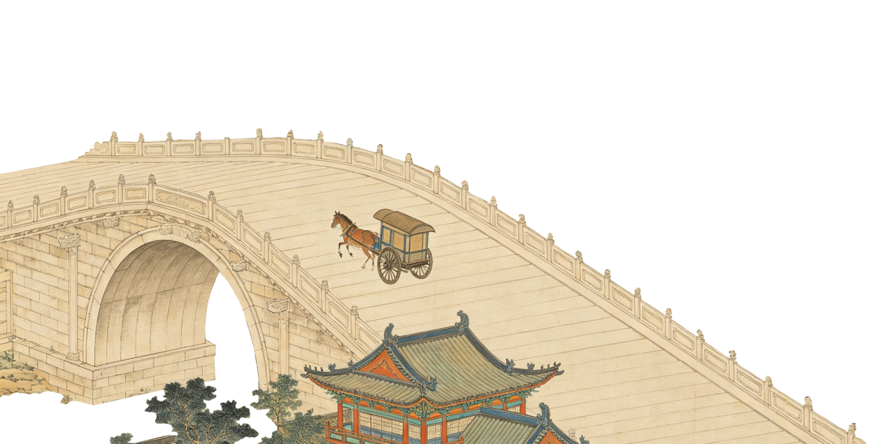
官道所抵，城镇繁兴。漕粮、丝绸、瓷器，天下物产循路而来。坚稳的交通网络，滋养出万家灯火与盛世繁华。
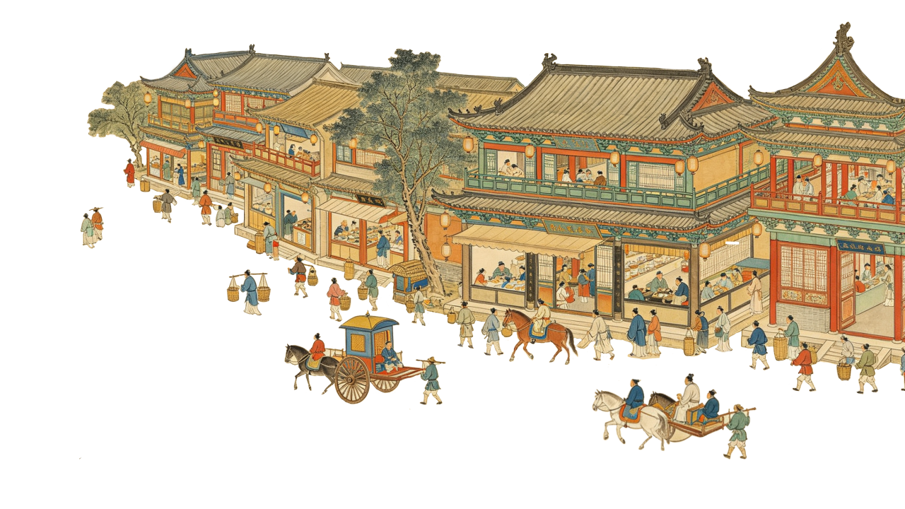
顺桥而望，官道直通京畿。驿站密布，驿马疾驰。石桥保障了政令、公文与军情在万里疆域内朝发夕至，是维系统治的钢铁脊梁。
石拱桥
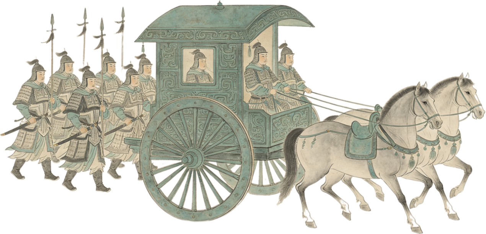